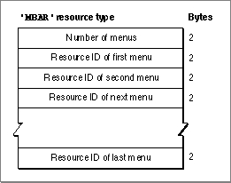

Legacy Document
Important: The information in this document is obsolete and should not be used for new development.
Important: The information in this document is obsolete and should not be used for new development.


The Menu Bar Resource
You can describe the order and number of menus in your menu bar in an'MBAR'resource, and you can describe your menus in'MENU'resources. If you do so, you can use theGetNewMBarfunction to read in the descriptions of your menus and create a new menu list. The Menu Manager stores information about your application's menu bar in a menu list. Figure 3-39 shows the format of a compiled'MBAR'resource. (See Listing 3-4 on page 3-49 for a description of an'MBAR'resource in Rez input format.)Figure 3-39 Structure of a compiled menu bar (
'MBAR') resource
A compiled version of an
'MBAR'resource contains the following elements:
If you use the
- Number of menus described by this menu bar.
- A variable number (the amount should match the number declared in the first 2 bytes) of resource IDs; each resource ID should identify a
'MENU'resource.
GetNewMBarfunction, the Menu Manager places the menus in the menu bar according to the order that they appear in the'MBAR'resource.